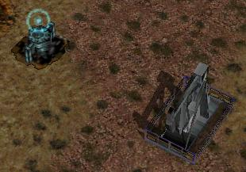
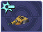

The power bar

A spare oil resource, and a derrick hard at work
In real life, money is power, but in Warzone, power is money. You spend power to build structures, manufacture units, and research upgrades/new technology.
So how do you get power? Power is generated by Oil Derricks. However, you must have at least one Power Generator for every four Oil Derricks.
Oil derricks must be built on oil resources, but the generator can be anywhere on the map. Keep in mind that additional generators beyond one for every four derricks will provide no benefit. Also note that building heaps of power generators won’t do anything at all until you have at least one oil derrick for each.
Icons in the Manufacture, Build, and Research menus will have yellow bars in them representing their price:
 Inexpensive weapon
 Expensive weapon
Expensive weapon
When you place your mouse over an icon, the power bar will have a green section, representing its price. If you cannot afford it, the power bar will instead turn red.
The amount of power you have is shown on the very left of the power bar. If you place your mouse over an icon, if you have enough power to get it, the number will show the amount of power it will cost. If you can’t afford it, the number will show the amount of power you need to be able to afford it.
Power is drawn as soon as the icon is clicked. Providing you have sufficient power for the activity, the initial progress bar fills quickly with green (slower with more costly actions) and the construction or research begins. A yellow progress bar then charts the progress achieved by the current activity.